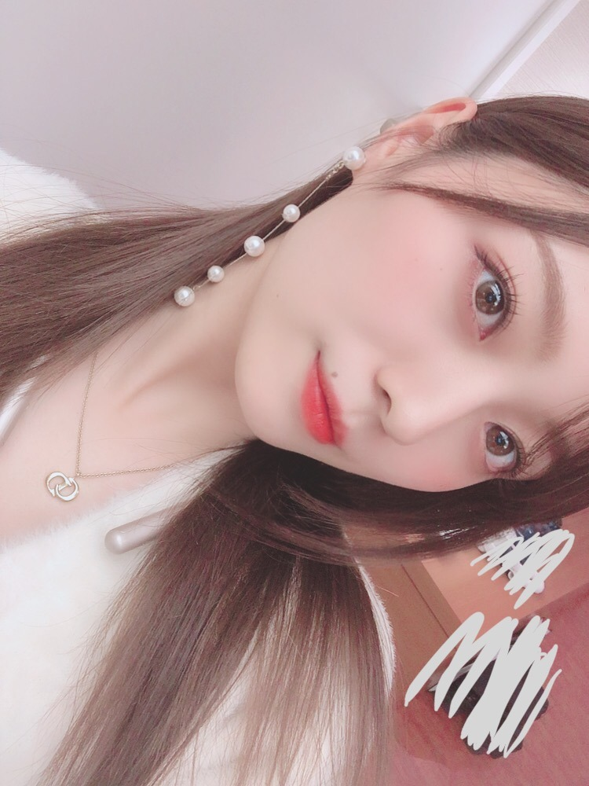
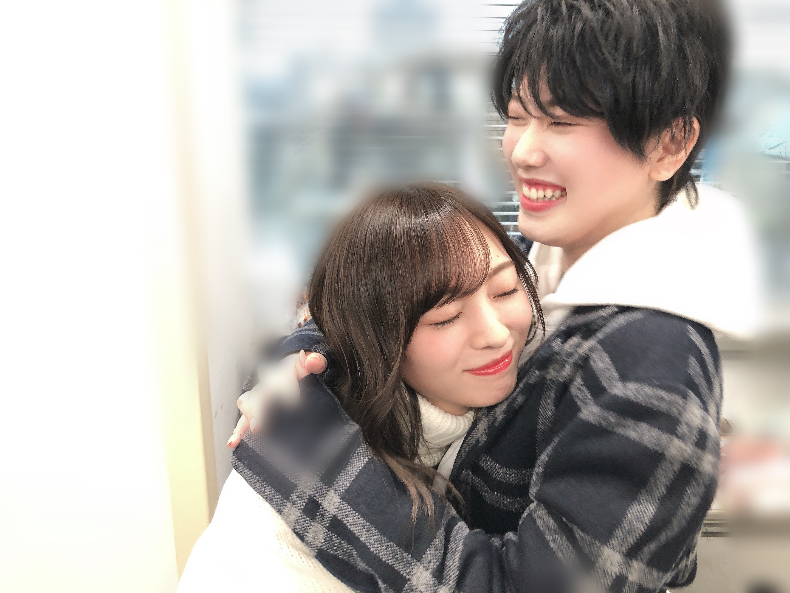
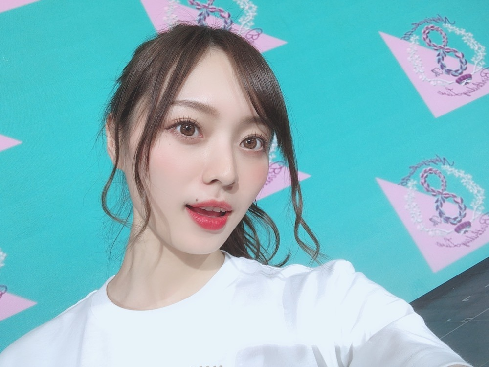
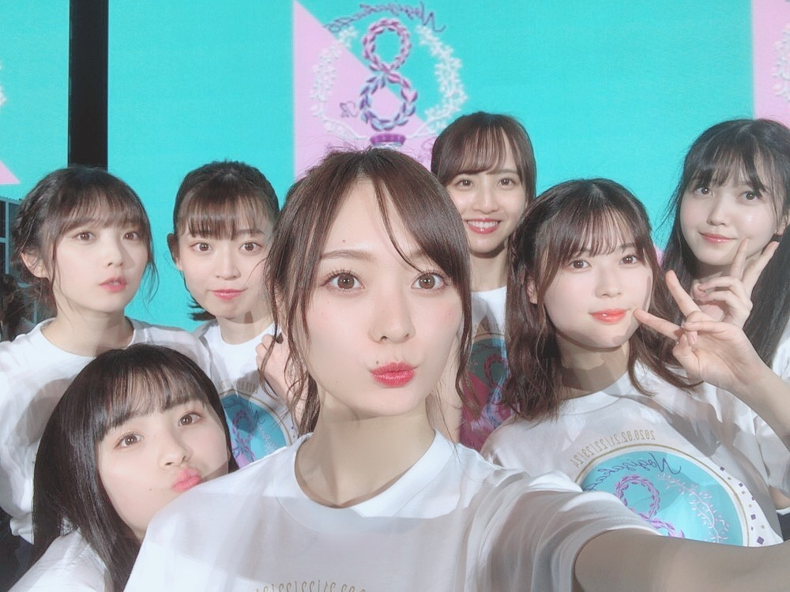
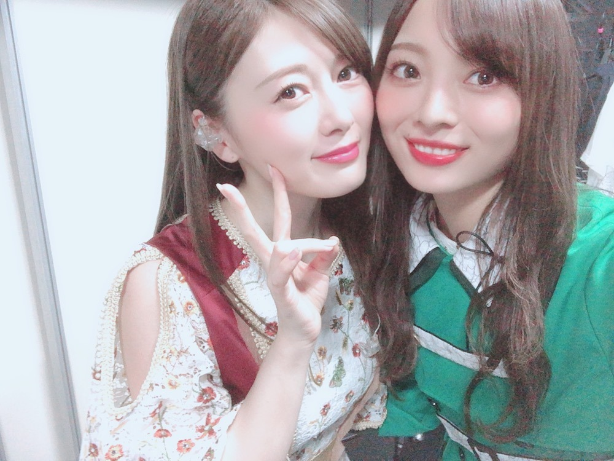

時計、逆まわりに

お久しぶりになってしまいました。
いかがお過ごしですか？
最近悲しかったことがありましてですね、
お気に入りのイヤホン、
左側から音が流れなくなりました。
うわ〜、ショックだなあ〜と思いつつ
壊れたまま１ヶ月ほどずっと使ってる︎︎︎︎✌︎
愛着が湧いているもので中々手放せない。
新しい相棒を探しに行かねば。
なんて、どうでもいい報告を
下書きに記していました。
気づけば前回の更新から早１ヶ月。
ここ最近は風のように日々が去っていってしまってどうも時間に追いつけません。
待ってくださってた方がいたら、
お待たせしました。
少し前になりますが、
企画させて頂きました〜！
加入前の視聴者だった頃から大好きな企画に参加出来て感無量でした、、
どの作品も物凄くドキドキするので
楽しんでいただけたのではないでしょうか☀︎
スタジオでずっとキュンキュンでした！
私達のはほんの日常、て感じで
見てほっこりして貰えたら。（笑）
バレンタイン設定は必須ではなかったので
大好きなクリスマスにしました（笑）
実は収録はクリスマス前だったの。
大好きな音楽と共に。
中学の頃からもう７年くらいずっと好きなアーティストさん♪


この幸せそうな顔。（笑）
じゅんなさんとでした❤︎きゃ〜
相変わらずのかっこよさ。包容力。
リハーサルからあれやこれやと追加でやってくれるものだから、身を委ねてました（笑）❤︎
楽しかったなあ〜
グランプリのあやめちゃんレンくんペア、可愛すぎました。
無事４日間終えることが出来ました！


大好きな乃木坂46として
日々活動させていただく中で、
時折長すぎる夢を見ているのではないかという感覚に陥ることがありますが
ステージに立っているときは特に、感じます。
パフォーマンスしながらも
色んな思いが湧き出てくる瞬間でもあります。
２００曲、数字だけで見ても
とてつもない曲数。
本当に全員で乗り越えたのか〜と思うと
感慨深い。凄いですね。
色んな人の思いやエピソードが
沢山詰まった楽曲達。
毎回パフォーマンスの形は違うかもしれないけれど、一人一人、心を込めて届けています。
観に来て受け取ってくださる皆様がいて、
成り立つものです。
笑顔も歓声もたくさん受け取りましたよ。
本当にありがとうございます！そして、
私たちがステージに立つ裏側には
たくさんのスタッフさん方のお力があります。
本当に本当にありがとうございました！
準備期間は大変なこともありますが
ステージでライトを浴びたとき
あぁ、このためにいくらでも頑張れるんだよなあ〜って、思うんです︎︎︎︎✌︎
できる限りいつまでも見続けたい景色。
去年の７thバースデーのときの私よりは
ずっと、強くなれた気がしてます。
堂々と立てた気がします。
楽しめた気がします。︎︎︎︎
怖いものも、誰かのためになれるのなら
恐れず向き合える気がします！
グループの歴史ある日を
過ごすことが出来て幸せでした。
４日目ラスト、
２００曲目に披露させていただきました、
２５枚目シングル「しあわせの保護色」
日々応援して下さる皆様のおかげです。
本当にありがとうございます！
とても心温まる曲です。
聴いていても流れていても踊っていても、
落ち着き癒されるような楽曲です。
一つ一つ大切にじっくり味わいながら
過ごしていきたいと思っています。
時間はずっと早く去っていってしまうから。
後輩の身としてまだまだ
先輩方から学ぶこと、山ほどあります。
それとは反対に、先輩という立場にもなった今、後輩たちに見せなければならない伝えなければならない姿もあります。
もう一歩、二歩、変わりたいです。
今のこのタイミングで、すごく思うことです。
もっともっと出来ることを増やしたい、
ジャンル関係なく挑戦していきたいです。
自分自身のレベルアップに務めたい。
グループの力になれる力が欲しいです。
日々変わり続けるグループの中で
自分の役目をしっかり見つけ、
今をしっかり味わって、楽しんで、
このシングルを皆様に届けられるよう精一杯務めさせて頂きます！
自分の頑張りや活動が
誰かの幸せになれているということに
気づかせてくれる人がいます。
それが、
自分が崩れそうになった時の柱です︎︎︎︎✌︎
どうしてもマイナスに向かってしまいそうな時
そんな大事な人達の顔が浮かびます。
私がここで折れたら悲しむ人がいる。
私にとってのブレーキです。
永遠が無いということは、このお仕事を始めて今まで何度も実感してきました。
ならばその限られた時間の中で、
幸せをたっぷり余すことなく感じたいのです。
今シングルも大切な人達と最高の作品を
待ってくださってるファンの皆様、
いつも応援してくれる家族や友人たちに
歌を届けたいです！
シングル詳細も発表されましたが、
３期生楽曲の「毎日がBrand new days」
MVも撮って頂きました。
個々では進化しているみんなも
全員が集まると初期とどこか変わらぬ雰囲気。
何にも変えられない同期の存在は
本当に尊く、愛おしくてたまりません。
みんなの笑顔がたまらなく大好きだから、
その笑顔を守りたいと思う１１人。
みんなが幸せであれ！と願います。
飛鳥さん、山と私３人のユニット曲
「ファンタスティック３色パン」
タイトルからお察しの通り、
とてもキャッチーで不思議な世界観です。
私個人としては１９枚目シングル以来、
２年半ぶりのユニット曲です。
いつか、またいつかと願っていたユニット曲。
どんな形であれ、、、やったー！
嬉しいです！ぜひお楽しみに。
新４期生の皆さんと活動できるの、
すごく楽しみです！


愛おしい
愛おしくてたまりません。
改めまして 乃木坂４６ ８周年
おめでとうございました！
ありがとうございました！
さあ、気づけばもうすぐホワイトデー。
大好きな方達に
バレンタインチョコを頂いたので❤︎
ホワイトデーになにか作ろうかなあと
今から考えております。
お菓子作り。しばらくしていないなあ


大好きで、大好きで、なりません。！！
ばばっと文字だらけで、、
読みにくくてごめんなさい。
では。
また書きます
少しずつ素の自分を見せることが
出来るようになってきた気がします！
飾らずにいる、って簡単なようで物凄く難しいことですよね。
だから飾らずに素直に生きる人にわたしはすごく惹かれます。そんな人になりたいなあ〜
人の前でも、カメラの前でも。
目標です！☀︎
Original：https://www.nogizaka46.com/s/n46/diary/detail/55132?ima=4940&cd=MEMBER